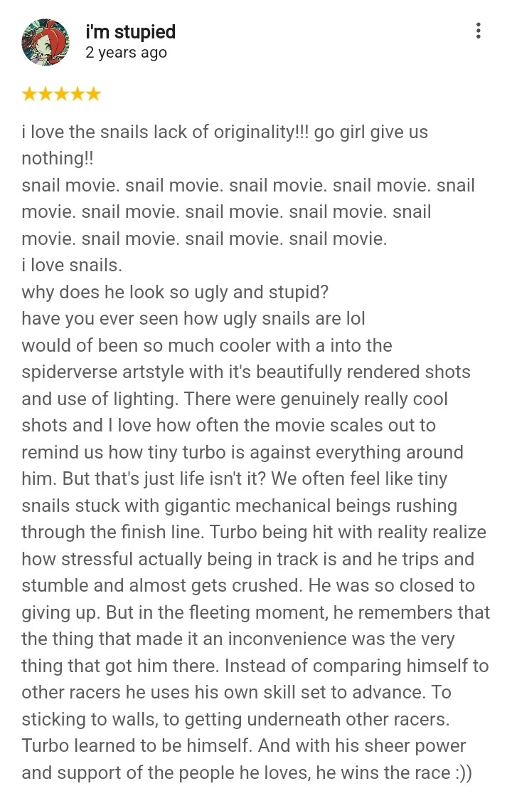

Movie Reviews
I like doing simple and repetitive stuff with something playing in the background. This means I have watched a handful of movies and shows, many of which I'd like to talk about.
I will not be deploying a numeric rating because I find them arbitrary and dumb.
Turbo (2013)
Go Snail Go!! :DD
Turbo is a Dreamworks feature film about a snail that wants to participate in an automobile race. I hold this film very closely to my heart and it never fails to cheer me up during re-watches. I just love how silly it is, from it's absurd premise down to it's exaggerated character designs. With a runtime of 90 minuets, the film does not overstay it's welcome and is a treat all through out.
My favorite scene is when they introduce the rest of the snail cast. After Turbo shows off his powers to everyone, the other snails from the race come along to befriend him. Each one showcasing their mutual interest in extreme sports while proudly proclaiming their dorky names. Turbo, being a little cocky, makes fun of them. Whiplash, the leader of the group, becomes offended and challenges him to a race. During which Turbo realizes that these snails are surprisingly really awesome. Despite their lack of speed, they made up for with innovation and resourcefulness. Even when Turbo lost, he couldn’t help but appreciate and look up to the other snails. If they can cover this much ground without speed, maybe he really does have a chance. Turbo finally found a community where he felt like he belonged. He’s never been anymore happier in his life.
I love how over the top Guy Gagne is as a villain, red carpet to walk on other racers and all. He is first introduced through a televised interview in which he appears to be level headed and genuine. It isn't until when we see him in person do we witness how calculated he is behind the camera. During the Chairman's announcement he laid back against the wall, completely indifferent to the matter. It wasn't till he saw the huge reception he realize the potential and quickly jumped back into his facade. He advocates for Turbo's right to participate in the race not out of good faith but because of the selfish desire to get more attention. It's made apparent with his insistence to be in every shot taken by the press. Honestly I don't blame Guy Gagne for acting the way he did. I'd be pretty embarrassed too if I lost to a god fucking snail.
I could go on about everything I like about the film but I believe 2022 me summarized it best:
Many people think Turbo is bad for being cliche and formulaic. Truthfully, I don't care enough to argue whether or not that's true and if such a factor holds a baring in a film's quality. I personally enjoy Turbo for it's campy nature and simple narrative. Sometimes that's all a movie needs to be.
January 24, 2025Hot Fuzz
"PACK IT IN FRANK, YOU SILLY BASTARD!"
Probably my favorite Edgar Wright film and the best out of the Cornetto Trilogy. This film is just so chaotic from start to finish. The comedy is sharp and the gore is brutal. Danny and Nicholas' dynamic is really endearing and really fucking gay.
January 25, 2025La La Land
Why is there still 60 more minutes?
The ending of the film is really no surprise. It was inevitable. Despite that, the film likes to dangle a glimmer of hope. A small spark of a childish dream for everything to work itself out.
January 26, 2025Juno
Hamburger Phone
Out of all the movies I've written about thus far, Juno is bit of an outlier. The climax isn't an overdramatized screaming session where the characters state out their greviences word for word. This movie has a more subtle and lowkey approach of telling it's story, which I really enjoy. It's kinda slice of life-esque, especially with it's endearing character interactions.
February 8, 2025Midsommar
Me when the Sommar is Mid
I have no problem with prioritizing spectacle over narrative, but this movie is just so difficult to look at. It likes panning with poorly compositionend long shots where nothing much happens. Most scenes are filmed in one take where actors just stand there awkwardly reciting their lines. Other scenes are shot too far away from the actors that it becomes difficult to see who's talking. I shit you not, a scene of a character packing up her things to leave is shot outside of the house where you can't even see her do that. The editing is also really jarring when it uses sudden hard cuts. As an Edgar Wright enjoyer, I have no problem with this style of editing but it feels so out of place in such a slow paced movie.
I don't really feel like dabbling into the story because, despite this film's attempts to seem introspective, the characters are shallow and have zero nuance. They say exactly what they think and mindlessly follow wherever the movie needs them to be. The sets and environments are not whimsical to justify the lack of a cohesive narrative and questionable editing choices. This was the longest 2 hours of my life.
February 9, 2025Stuff I'd Like To Ramble About